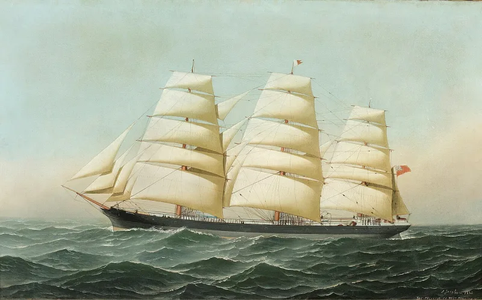
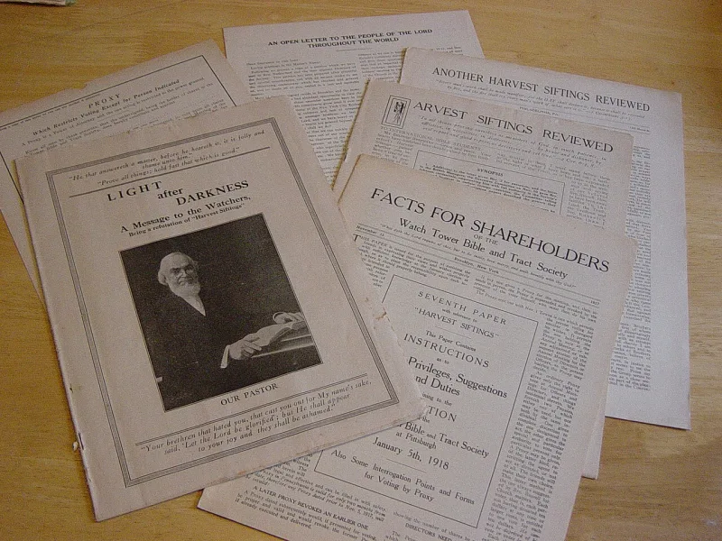

No good counter-argument has been published by the Watchtower.
One text covers every reversal. Proverbs 4:18 says the path of the righteous keeps getting brighter.
The Watchtower of Dec 1, 1981 (pp. 27-28) built it into a system.
Like a ship tacking against the wind, the organization may zigzag and still progress. The same article adds that changes in understanding "often served as a test of loyalty."
Take Romans 13 and the "superior authorities." Russell said they were earthly governments. From 1929 to 1962 they were Jehovah and Jesus only.
In 1962 they were earthly governments again. The middle view, now called an error, was itself announced as brighter light.
The resurrection of the men of Sodom has flipped at least four times since 1879. A path that returns to its start is not brightening.
They accept the premise. They are not inspired, so their understanding improves, exactly as the disciples' did.
The apostles expected an earthly kingdom until Pentecost. The early church needed a council in Acts 15 and a vision to Peter to settle the question of the Gentiles.
Paths on real ground do switchback. And they named the tacking pattern themselves, in print.
Which church has no reversed doctrines? At least this one dates its corrections.
That defense would work for a body claiming to be a fallible student of Scripture. This body claims to be Jehovah's only channel.
It expels members who keep believing the old light after the switch. And the 1981 article recasts its own zigzags as a test of loyalty God intended.
That last part is the tell. The mechanism does not just excuse error.
It turns error into an obedience tool.
Strong for you. Proverbs 4:18 in context describes the moral path of a righteous man, not the doctrine of an institution.
Document the Romans 13 arc: A, then B, then A again. Brightening light does not retrace its steps.
"On Romans 13 the teaching went from governments, to God and Christ, and back to governments. Which of those was the brighter light?"


They are not inspired, so understanding improves; which church has no reversed doctrines?
The Watchtower accepts the premise. It is not inspired, so its grasp improves over time, exactly as the disciples' did. They expected an earthly kingdom until Pentecost. The early church needed a council in Acts 15, plus a vision to Peter, to settle the question of the Gentiles.
Proverbs 4:18 describes a path, and paths on real ground switchback. The tacking image was offered openly, in print. It names the very thing critics accuse them of hiding. Which church has no reversed doctrines? At least this body prints its corrections and dates them. That allows exactly the scrutiny now being applied to it.
Strong for you. On Romans 13 the light went A to B and back to A.
The defense would work for a church that claimed only to be a fallible student of Scripture. It cannot work for this one. This body claims to be Jehovah's sole channel. It expels members for holding the previous light after the switch. And in the same 1981 article, it recasts its own zigzags as a test of loyalty that God intended.
That last clause is the tell. The mechanism does not merely excuse error. It turns error into a tool of obedience.
Proverbs 4:18, in context, describes the moral path of a righteous man. It is not about the doctrine of an institution. So the Watchtower's use of it proof-texts its own immunity. Document the Romans 13 arc: A to B and back to A. Brightening light does not retrace.